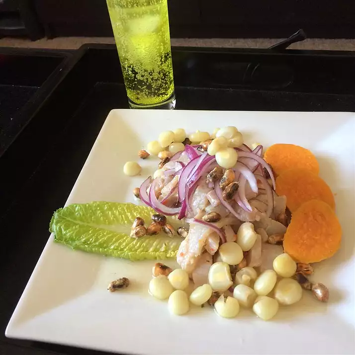

Ceviche

With the picture above we have what is known as peruvina Ceviche. This meal is known for having a sea like flavor and is usually served spicy.
Ingredients for Ceviche based on a bigger portion
- Fish(preferably Tilapia)
- 1/2 kg of lime
- 1/2 kg lemon
- 1 small onion
- 3 medium peppers
- 1/2 cup of fresh coriander
- Salt to tase
-
The following are optional:
- Sweet potatoe
- Peruvian corn
- Plaintain crips
The following are the steps required to make this delious meal:
- The fish must be removed of any scales, skin, or spines prior to cutting into even like cubes about 2 inches each.
- Grab both the lemon and limes(wash them) and squeeze them into a large bowl
- Place the mixed juice into a container with the fish ensuring that the fish is covered. From there you will want to let sit in the fridge for 30 minutes to an hour.
- While you are waiting you can prepare both the sweet potatoe and other granishes if needed. You can also cut up both the onioins and peppers and place on the side while you wait for meat to finish in the fridge
- Once cut and the fish has been in the frideg for 30 minutes to an hour you can add both the onioins and the peppers.
- The sweet potatoe and corn should be put in a pressure cooker and let cook You can fry the plantain for more of a cripiers side.
Click here to return to the main menu